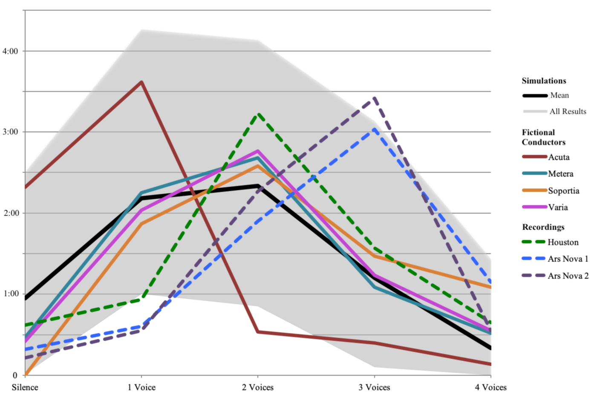
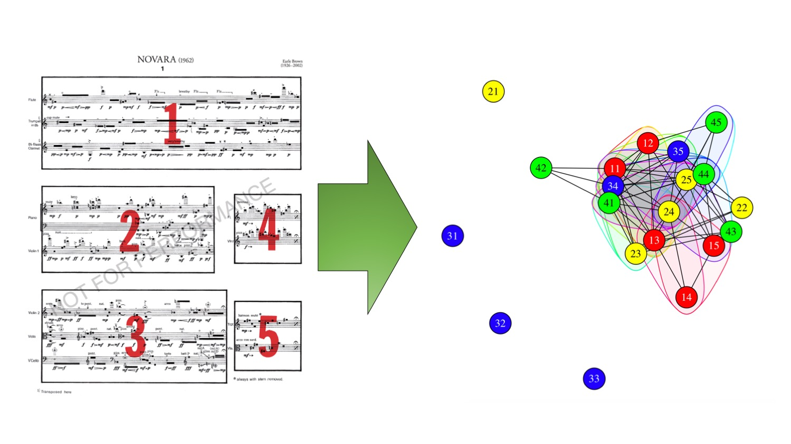

Welcome! This is a portfolio of my scholarly and creative digital research in music. The projects highlighted here fall into two categories: (1) computational musicology, and (2) virtual score platforms.
My research focuses on how musical decisions are negotiated during performance amongst factors like notation, unnotated norms, and musicians' aesthetic priorities. Even though many of the specific case studies are taken from experimental music, my findings illustrate musical possibilities, limits, and contingencies that are germane to diverse performance paradigms. Understanding how musical decisions are reached informs not only historical studies, but also shapes the design of my virtual score platforms in facilitating new, creative models of collaboration between musicians.
Through creative interventions in research methodologies, data presentation, pedagogy, and performance, digital scholars continue to reveal how much technology has to offer music studies, and vice versa. For more on my creative work with digital tools, my electronic music portfolio includes musical compositions with live electronics, Max abstractions, JSFX plug-ins (which I use to teach Cockos Reaper), and more. You can also visit my GitHub page.
Approaches to Analysis and Performance in John Cage’s Four2
Prevalence of Number of Parts Heard Simultaneously in Different Realizations of Four2
The core of this research project is a comparison between real-world performances of John Cage's 1990 choral composition Four2 and a corpus of computer-generated random simulations of the piece. One of the most significant differences between the real-world and virtual realizations is the cumulative amount of time a particular number of voices is heard over the seven-minute duration of the piece, as illustrated by the chart above. In my conclusion, based on Cage's writing and interviews with conductors, I point to specific performance practices that may account for these differences.
Tools used include Max (for generating simulations), R (for statistical analysis), and chart.js (for the interactive line graph in the published article). The article is accompanied by software built in Max that allows users to create and hear their own versions of Four2. Download the latest version as a Max patch here.
Resulting Publication:
Andersen, Drake. "'What can they have to do with one another?': Approaches to Analysis and Performance in John Cage’s Four2." Music Theory Online 23/4 (December 2017).
Graph Theory and the Music of Earle Brown
The Events of Earle Brown's Novara as a Graph with Cliques Highlighted
I propose an approach to the analysis of Earle Brown's open form compositions informed by mathematical graph theory. The musical events of Brown's works are represented by nodes in a graph, and the edges reflect the possibility of “smooth transitions and long lines of connected material” as determined by instrumentation, following Brown's preferred performance practice. In addition to mapping performance, this approach allows for the identification of structural groupings through complete induced subgraphs, or "cliques," amongst events.
Tools used include R (for statistical analysis), igraph (in R and Python for visualizing graphs), and music21 (for pitch analysis of cliques).
A talk introducing the approach entitled "A Graph Theoretical Approach to 'Interactional Complexity' in the Music of Earle Brown" was presented virtually at the annual meeting of the Music Theory Society of New York State (and will be available online in July 2020 here.) An article-length manuscript is forthcoming. A draft of the presentation and visuals can be downloaded here.
Sum Class

Nested Tetrahedrons Showing Tetrachord Progressions with Pure Contrary Voice Leading
The focus of this project, in which I participated as a research assistant for Joseph Straus, was to explore progressions of chords that share a "sum class" (i.e. sets of equal cardinality where the sum (mod12) of the constituent pitch classes is equal). My role was to use computational methods to visualize a pure contrary voice leading space for all tetrachords, primarily using R. I used multidimensional scaling (MDS) in the early stages to explore different overall shapes.
Resulting Publication:
Straus, Joseph N. "Sum Class." Journal of Music Theory 62/2 (October 2018): 279-338.
Indra
content
Circles
content